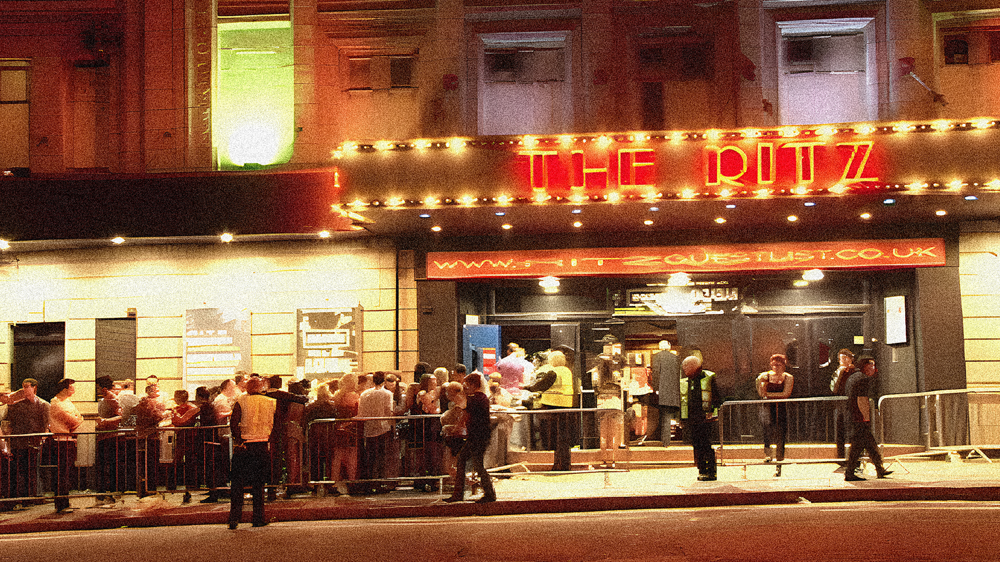
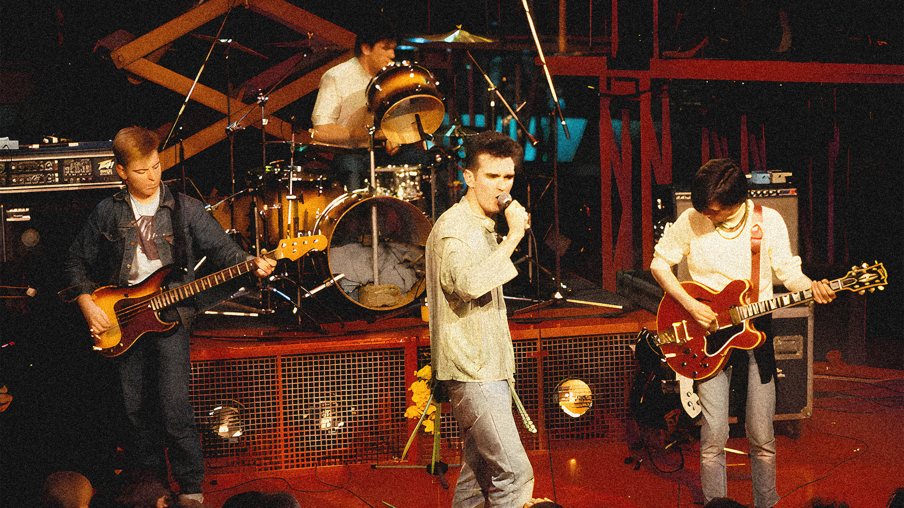

From Dancehall to Iconic Venue
The Ritz first opened its doors in 1927 as a dancehall, complete with a unique sprung dance floor that it remains famous for. For decades it was a glamorous hotspot for ballroom dancing, hosting everything from tea dances to lively social gatherings. As music tastes shifted, so did The Ritz, transitioning from a dancehall into a vibrant concert venue. By the 1970s and 80s, it had become a hub for live music, adapting its stage to the changing rhythms of the local music scene.
A Stage for Manchester’s Finest
During the 1980s, The Ritz became a key player in the rise of Manchester’s blossoming alternative music scenes. The Smiths performed there in 1983, just as they were beginning to cement their place as indie rock pioneers. The venue also welcomed Joy Division before their tragic end, offering fans an early glimpse of the post-punk legends. As the Madchester movement took over, bands like Happy Mondays and Inspiral Carpets brought their infectious sound to The Ritz, making it a cultural hotspot for fans of the new wave.
The Home of Global Talent
The Ritz didn’t just host local icons; it also became a launchpad for global talent. In the 90s and 2000s, bands like Oasis, The Verve, and Arctic Monkeys played intimate gigs here before rising to international stardom. Its reputation for showcasing emerging talent drew music fans eager to see the next big act before they hit the mainstream. The Ritz became a rite of passage for musicians, offering a stage where careers were made and memories created.
The Ritz Today
After nearly a century of performances, The Ritz remains one of Manchester’s most beloved venues. Following a major renovation in 2011, it retained its historic charm while upgrading its facilities for modern audiences. Today, it continues to host an eclectic mix of artists, from rising indie bands to established acts like Florence + The Machine and The 1975. Whether it’s the nostalgia of its rich history or the excitement of its ever-evolving lineup, The Ritz remains a cultural landmark that’s deeply ingrained in the heart of Manchester’s music scene.